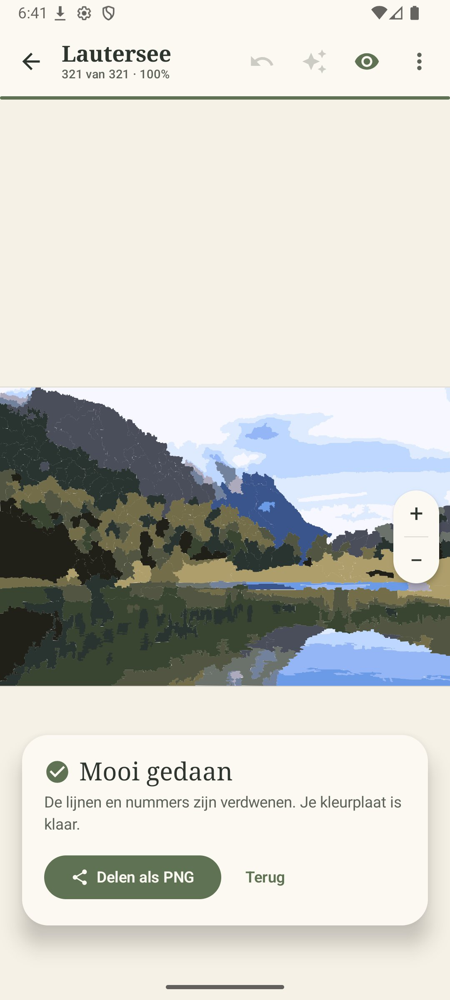
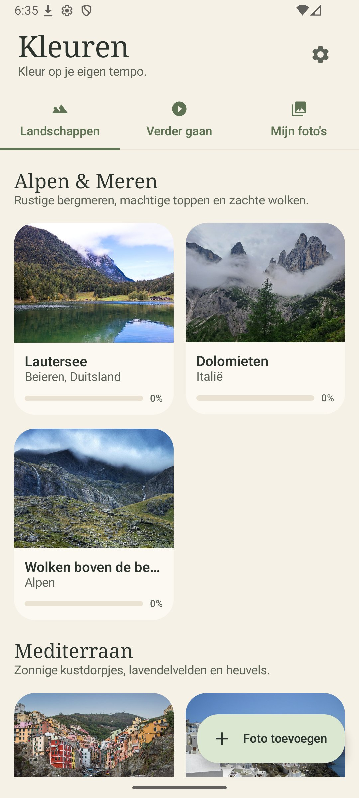
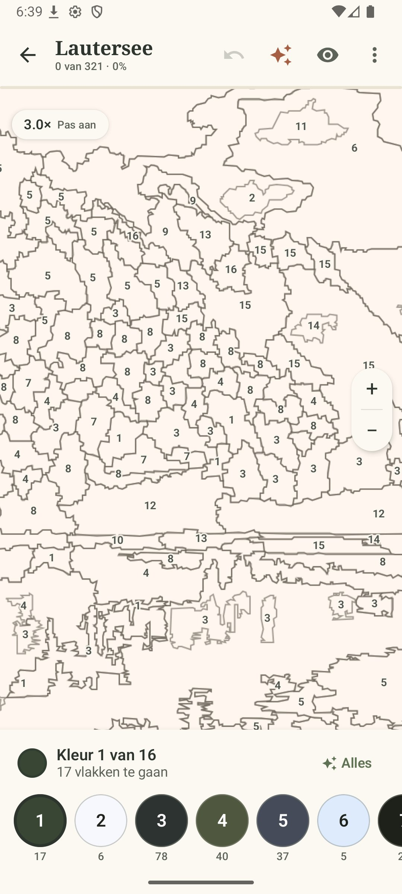

Kies een plaat
Er zijn tien Europese landschappen in drie packs. Of je kiest een foto van je eigen telefoon. De app maakt daar een nieuwe kleurplaat van.
Het codeboek · in gewone taal
Dit is de complete rondleiding door de code van Kleuren, een rustige paint-by-numbers-app voor Android. Je leest hoe een foto verandert in honderden genummerde vlakken, hoe het bord ze supersch snel tekent en waar alle gegevens blijven. Geen voorkennis nodig.



De app in drie momenten: kiezen, kleuren, klaar.
Kleuren is een Android-app waarin je op je eigen tempo een landschap inkleurt. Elk vlak heeft een nummer. Je kiest een kleur, tikt op een vlak en de app doet de rest. Geen timer, geen levens, geen energie.
Er zijn tien Europese landschappen in drie packs. Of je kiest een foto van je eigen telefoon. De app maakt daar een nieuwe kleurplaat van.
Onderin het bord staat een palet. Bij elke kleur zie je hoeveel vlakken er nog bij horen. Een hint-modus licht ze allemaal op.
Tik op een vlak met het juiste nummer. Het vult zich met de kleur. Klopt het niet? Dan krijg je een vriendelijke aanwijzing, geen straf.
Dit is een leerproject, geen afgeronde commerciële app. De code is bewust rechttoe-rechtaan gehouden en de comments zijn in het Nederlands. Op sommige plekken is gekozen voor eenvoud boven een bibliotheek. Waar dat zo is, staat er in dit boek bij waarom.
Een plaat is een lijst van vlakken. Elk vlak heeft een vorm, een kleur en een nummer. De app hoeft alleen te weten welk vlak je raakt.
:format en :pipeline zijn pure Kotlin.
Daardoor kun je ze op je laptop testen en gebruikt de generator
dezelfde code als de telefoon.
De ingekleurde vlakken en de lijnen worden één keer naar twee bitmaps getekend. Elk frame toont alleen die twee plaatjes plus de nummers. Dat houdt het snel.
Voordat je in de code duikt, is het handig om te weten welke blokken er zijn. Kleuren bestaat uit vier Gradle-modules. Denk aan een module als een lade met code die je apart kunt bouwen en testen.
.kplate-bestanden. Pure Kotlin, geen Android.
content/content.json en schrijft de meegeleverde platen, previews en het manifest.
:format en :pipeline weten niets van
Android. Ze hebben geen Context, geen
Bitmap en geen scherm nodig. Daardoor zijn ze snel te
testen en gebruikt de generator exact dezelfde code als de app. Dat is
de belangrijkste architectuurkeuze van dit project.
kleuren/
├── app/ De Android-app (Compose, ViewModels, repos)
│ ├── src/main/assets/ manifest.json, .kplate-bestanden, previews, bronfoto's
│ └── src/main/java/nl/kleuren/app/
│ ├── data/ opslag, manifest, instellingen, generator
│ └── ui/ bibliotheek, bord, foto importeren, instellingen
├── format/ .kplate encoder/decoder (pure Kotlin + tests)
├── pipeline/ foto → kleurplaat (pure Kotlin + tests)
├── tools/generator/ desktop-CLI om content te maken
├── content/ bronfoto's, content.json, CREDITS.md
└── docs/ screenshots, FORMAT.md en dit codeboekAlles begint bij pixels en eindigt bij een bestand dat de app kan openen. Onderweg wordt de foto steeds een beetje meer "plaat":
Plate.kplate
./gradlew :format:test :pipeline:test draait op je
laptop. Geen emulator, geen Android SDK-gedoe. Je weet binnen een
paar seconden of de kern klopt.
De app en de generator roepen dezelfde PhotoToPlate.convert
aan. Een landschap en een eigen foto krijgen daardoor dezelfde
soort moeilijkheid en dezelfde soort vlakken.
De UI weet niet hoe een .kplate in elkaar zit. De
pipeline weet niet hoe een scherm eruitziet. Daardoor kun je een
laag vervangen zonder de andere te slopen.
Zie de app als een restaurant. De keuken (pipeline) maakt het eten. De voorraadkast (format) bewaart de recepten en ingrediënten op een vaste manier. De ober (UI) brengt het naar je tafel. De generator is de centrale productiekeuken die dezelfde recepten gebruikt, maar dan voor alle tafels tegelijk.
Je hoeft niet van voor naar achter te lezen. Kies de route die bij je past. Onderweg kom je kaders tegen met een vast ritme: eerst in gewone taal, dan de code, dan wat je moet onthouden.
Lees eerst Kotlin in 10 minuten, dan de reis van een foto en daarna het bord. Sla de diepe codefragmenten gerust eerst over.
Begin bij de grote plaat, schakel door naar het formaat en lees daarna de tekenmotor. Pak de code erbij.
Ga direct naar het bord, de app-laag of de oefeningen. Daar staat per taak welke bestanden je nodig hebt.
Een uitleg zonder jargon, vaak met een vergelijking. Lees dit eerst als je het idee nog niet helder hebt.
Een kort fragment uit het echte project, met het bestand erbij. Je hoeft niet elk teken te begrijpen; kijk naar de vorm.
Een plek waar iets verrassends gebeurt, waar een beperking zit of waar je een veelgemaakte fout kunt maken.
Een kleine oefening of controle. Je leert het meest door iets te veranderen en te kijken wat er gebeurt.
De comments en de gebruikersinterface zijn Nederlands, maar veel
klassennamen zijn Engels: Plate, Region,
BoardRenderer. Dat is geen willekeur. Engelse namen zijn
gangbaar in de Android-wereld en maken het makkelijker om later een
internationale bijdrage te doen. In dit boek vertalen we ze steeds naar
gewoon Nederlands.
Open de code ernaast. Alle paden in dit boek zijn echte bestanden in de repository. Klik op een bestandsnaam in Waar staat wat? om hem op GitHub te openen.
Je hoeft niet alle 4.000 regels te lezen om de app te snappen. De kern past in drie ideeën: een plaat is een lijst vlakken, een foto wordt met wiskunde platgeslagen tot die vlakken en het bord tekent die vlakken op twee bitmaps. De rest is invulling.
Dit is geen complete Kotlin-cursus. Het is de minimale taalgids om de code van Kleuren te kunnen lezen. Ken je al een andere programmeertaal, dan zul je veel herkennen.
val en varMet val maak je iets dat niet meer verandert. Met var maak je iets dat mag veranderen.
val appNaam = "Kleuren" // blijft zo
var teller = 0 // mag veranderen
teller += 1Een functie is een blokje code met een naam. Je geeft er waarden in en krijgt er iets terug.
fun oppervlakte(breedte: Int, hoogte: Int): Int {
return breedte * hoogte
}Een data class is een doosje met benoemde velden. Kotlin maakt zelf equals, hashCode en een leesbare toString.
data class AppSettings(
val showNumbers: Boolean = true,
val themeMode: ThemeMode = ThemeMode.SYSTEM,
)whenEen nette manier om te kiezen tussen mogelijkheden. Vergelijk het met een schakelaar of een menu.
val label = when (stage) {
ConversionStage.PREPARING -> "Foto voorbereiden…"
ConversionStage.QUANTIZING -> "Kleuren kiezen…"
else -> "Bezig…"
}Een waarde kan null zijn: "niets". Kotlin dwingt je om daarover na te denken. ?. doet iets alleen als er iets is. ?: geeft een fallback.
val regio = plate.regionById(id) ?: return
val kleur = plate.palette.getOrNull(index)Een List houdt volgorde bij. Een Set bevat elk ding maar één keer. Een Map koppelt een sleutel aan een waarde.
val gevuld: Set<Int> = setOf(1, 2, 3)
val aantal = gevuld.count { plate.regionById(it) != null }
val ids = plate.regions.map { it.id }Een lambda is een klein functietje dat je ergens aan meegeeft. { } betekent "dit moet je doen". Vaak gebruik je it voor het ene argument.
val blauweVlakken = plate.regions
.filter { it.colorIndex == gekozenKleur }
.map { it.id }Zwaar werk hoort niet op de main-thread: dan bevriest het scherm. Een coroutine is een achtergrondtaak die netjes kan wachten en stoppen.
viewModelScope.launch {
val plaat = withContext(Dispatchers.Default) {
PhotoToPlate.convert(width, height, pixels, options)
}
// hier weer op de main-thread
}Een StateFlow is een bord met de huidige toestand. De UI hangt eraan en krijgt automatisch een seintje als er iets verandert.
private val _state = MutableStateFlow(BoardUiState())
val state: StateFlow<BoardUiState> = _state.asStateFlow()Een @Composable is een functie die een stukje scherm beschrijft. Als de state verandert, maakt Compose dat stukje opnieuw.
@Composable
fun Teller() {
var aantal by remember { mutableStateOf(0) }
Button(onClick = { aantal++ }) {
Text("Je klikte $aantal keer")
}
}Kotlin is de taal, Compose is de manier waarop je schermen beschrijft, en Gradle is de bouwvakker die alles in de juiste volgorde compileert. Je hoeft geen monteur te zijn om te snappen hoe een auto rijdt, maar het helpt om te weten waar het stuur zit.
Je ziet in de code soms !!. Dat betekent: "ik weet zeker
dat dit niet null is". Als dat toch zo is, crasht de app. In Kleuren
wordt !! spaarzaam gebruikt, meestal op plekken waar de
state net daarvoor is gecontroleerd. Voel je je onzeker? Vervang het
liever door een nette ?:-controle.
Dit is het hart van het project. De pipeline krijgt een foto en maakt
daar een Plate van: een lijst vlakken met kleuren,
nummers, contouren en een id-map. Dezelfde stappen gelden voor de tien
landschappen en voor je eigen foto.
Stel je voor dat je een foto hebt van een bergmeer. Je wilt geen miljoen verschillende kleuren, maar een handvol kleuren die je met stiften kunt natekenen. De pipeline doet niets anders dan de foto versimpelen tot grote, aanraakbare vlakken. Daarna trekt hij een lijntje om elk vlak en zet hij er een nummer in.
De app opent de Android Photo Picker. Dat is de fotokiezer van het systeem. De app krijgt alleen toegang tot de foto die jij aanwijst. Daardoor zijn er geen opslag- of cameratoestemmingen nodig.
De gekozen foto wordt verkleind naar maximaal 2048 pixels en als
Bitmap in het geheugen gezet. Daarna begint de
eigenlijke pipeline.
Bestanden: ui/photo/PhotoImportScreen.kt, ui/photo/PhotoImportViewModel.kt
Een foto van 12 megapixel heeft 12 miljoen pixels. Voor een kleurplaat op een telefoon is dat veel te veel werk. De lange zijde wordt teruggebracht naar maximaal 1200 pixels. De verhouding blijft hetzelfde.
Dat gebeurt met een box filter: elk nieuw pixel is het gemiddelde van een blokje oude pixels. Dat is simpel en voorkomt rafelige randen beter dan "pak elke zoveelste pixel".
fun downscale(source: Raster, maxSide: Int): Raster {
val longest = max(source.width, source.height)
if (longest <= maxSide) return source
val scale = maxSide.toDouble() / longest
// elk doel-pixel = gemiddelde van een blok bronpixels
...
}1200 pixels langs de lange zijde is scherp genoeg voor een telefoonscherm, maar houdt het geheugen en de rekentijd behapbaar. De bitmaplagen van het bord zijn maximaal 1800 pixels; bij diep inzoomen worden ze dus iets zachter. Dat is een bewuste ruil.
Foto's bevatten ruis, JPEG-artefacten en oneffenheden. Als je die allemaal meeneemt, krijg je honderden spikkelvlakjes. De app kijkt daarom naar de 3×3 buren van elk pixel. Alleen buren die qua kleur sterk lijken op het midden tellen mee in het gemiddelde.
Het resultaat: zachte vlakken, maar scherpe overgangen bij bergen, bomen en gebouwen. Dit is een vereenvoudigde bilaterale filter.
raster = ImageOps.downscale(raster, options.maxSide)
raster = ImageOps.smoothEdges(raster)De foto heeft nog duizenden kleuren. De app moet er 12 tot 20 overhouden. Dat doet hij met k-means: een algoritme dat pixels in groepjes met vergelijkbare kleuren verdeelt.
Stel je een tafel vol potloden voor. Je wilt ze opruimen in veertien potjes. Je kiest veertien beginplekken, legt elk potlood bij de dichtstbijzijnde plek en schuift daarna elk potje naar het gemiddelde van zijn potloden. Dat herhaal je een paar keer. Dan heb je veertien kleuren die de foto goed samenvatten.
De app doet dit eerst op een steekproef van maximaal 48.000 pixels (snel), en daarna één keer voor alle pixels (nauwkeurig). Bijna-identieke kleuren worden samengevoegd met een Delta E-maat: twee kleuren die voor het oog vrijwel gelijk zijn, zijn funest voor een kleurplaat.
// Elk pixel hoort bij het dichtstbijzijnde kleurcentrum.
for (c in centers.indices) {
val d = ColorMath.distanceSq(color, centers[c]).toLong()
if (d < bestDistance) {
bestDistance = d
best = c
}
}De kleuren worden daarna gesorteerd van veel voorkomend naar weinig voorkomend. Kleur 1 in het palet is daardoor meestal de grote achtergrondkleur.
Na k-means heeft elk pixel een label: een nummer dat zegt bij welke paletkleur het hoort. Maar er kunnen losse spikkels en kartelige randen overblijven. Een 3×3 mode-filter vervangt elk label door het meest voorkomende label in de buurt.
Bij een gelijke stand wint het middenpixel, zodat een bestaande rand niet zomaar verschuift. Het resultaat zijn rustiger, aaneengesloten vlakken.
val smoothedLabels = ImageOps.smoothLabels(
labels = quantized.labels,
width = quantized.width,
height = quantized.height,
paletteSize = quantized.palette.size,
)Nu gaat de app op zoek naar stukken die bij elkaar horen. Pixels met dezelfde kleur die boven, onder, links of rechts aan elkaar grenzen, vormen samen één connected component. Dat is één inkleurbaar vlak.
Dat gebeurt met een flood-fill: begin bij een pixel, loop alle buren af, en daarna de buren van de buren. Een iteratieve wachtrij voorkomt een stack overflow bij grote achtergronden.
val extraction = RegionExtractor.extract(
quantized = cleaned,
options = options,
onProgress = { fraction -> ... },
)Als er na al dat opruimen nog meer dan 800 vlakken over zijn, smelt de extractor de kleinste vlakken samen tot hij binnen de bandbreedte zit. Zo blijft een plaat behapbaar.
val minimumArea =
max(16, (pixelCount * options.minRegionFraction).roundToInt())
graph.mergeSmallRegions(minimumArea)
graph.mergeDownTo(options.targetMaxRegions)Elk vlak is nog een verzameling pixels. De app loopt met een denkbeeldig potlood langs de buitenrand, met de gevulde pixels aan de rechterkant. Bij elk roosterpunt probeert hij eerst rechtsaf, dan rechtdoor en dan linksaf. Zo krijg je precies de buitencontour, ook bij een vorm met inhammen.
Die contour bestaat uit honderden kleine "trapjes". Met het algoritme van Douglas–Peucker blijven alleen de punten over die echt nodig zijn om de vorm binnen een paar pixels te benaderen.
val rawContour = ContourTracer.traceOuterContour(...)
val simplified = ContourSimplifier.simplifyClosed(
rawContour,
options.simplifyEpsilon,
)Een vlak kan een gat hebben, bijvoorbeeld een meer in een berg. De tracer negeert dat gat. Dat is geen bug: de vlakken worden straks van groot naar klein getekend, zodat het kleine meervlak bovenop het grote bergvlak komt. De tekenvolgorde lost het gat op.
Nu worden de vlakken gesorteerd van groot naar klein. Elk vlak krijgt een uniek id, een kleurindex, een vectorpad, een zwaartepunt (waar het nummer komt) en een oppervlakte.
Daarna maakt de pipeline de id-map: een raster waarin elk pixel zegt welk vlak daar ligt. Dit is de kaart waarmee het bord later in één opzoeking weet welk vlak je hebt aangetikt.
val plate = Plate(
width = extraction.width,
height = extraction.height,
palette = quantized.palette,
regions = regions,
idMap = extraction.idMap,
).kplate-bestandDe app voegt nog een kleine preview-JPEG toe en schrijft alles naar één compact binair bestand. Dat bestand gaat naar de opslag (bij een eigen foto) of naar de assets (bij de generator).
De generator doet daarna nog iets extra's: hij schrijft een
manifest.json met titels, credits en het aantal
vlakken, plus de fotocredits.
PlateCodec.write(plate.withPreviewJpeg(preview), file)
Alle stappen worden aangestuurd vanuit PhotoToPlate.convert.
Dat is expres één leesbare volgorde. De app en de generator hoeven
alleen deze functie aan te roepen.
var raster = Raster(width, height, argb)
raster = ImageOps.downscale(raster, options.maxSide)
raster = ImageOps.smoothEdges(raster)
val quantized = KMeans.quantize(raster, options.colorCount, seed) { ... }
val labels = ImageOps.smoothLabels(quantized.labels, ...)
val extraction = RegionExtractor.extract(cleaned, options) { ... }
return Plate(
width = extraction.width,
height = extraction.height,
palette = quantized.palette,
regions = regions,
idMap = extraction.idMap,
)Bij een drukke foto kunnen er honderden kleine vlakjes ontstaan. De extractor smelt de kleinste samen tot maximaal 800. De app probeert het bij sommige niveaus ook opnieuw met minder kleuren.
Een foto met grote egale luchten kan onder de streefband zakken. Dat is niet erg: grote vlakken zijn juist rustig. De generator waarschuwt, de app accepteert het.
De app vangt fouten af en toont "De foto kon niet worden gelezen". Ze crasht niet en laat geen half bestand achter.
De pipeline geeft via een callback terug of hij door mag gaan.
Annuleren gooit een ConversionCancelledException en
ruimt netjes op.
Open pipeline/src/main/kotlin/nl/kleuren/pipeline/PhotoToPlate.kt
en zoek de zes report(...)-regels. Dat zijn precies de
momenten waarop de app de voortgangsbalk bijwerkt. Vergelijk ze met de
fases in ConversionStage.
.kplate-formaat
Een kleurplaat wordt bewaard als één binair bestand met de extensie
.kplate. Je kunt het niet met een tekstverwerker openen,
maar het is wel heel compact. Een plaat is ongeveer 150–250 KB.
Zie het bestand als een verzegelde envelop. Aan de buitenkant staat precies hoe groot de inhoud is en welke versie je in handen hebt. Pas als de postbode de zegel controleert, maakt hij de envelop open. Zo weet de app meteen of het bestand klopt voordat ze aan de inhoud begint.
| Bytes | Wat staat er? | Waarom? |
|---|---|---|
| 4 | De letters KPLT | Zo herkent de app het bestandstype. |
| 1 | Formaatversie, nu 1 | Een toekomstige versie kan anders zijn. |
| 1 | Gereserveerd | Ruimte voor later, nu altijd 0. |
| 4 | Lengte van de uitgepakte inhoud | Beveiliging tegen kapotte of kwaadaardige bestanden. |
| rest | De inhoud, gecomprimeerd met zlib | Veel kleiner, met een checksum tegen beschadiging. |
Als je de envelop opent, krijg je een vaste volgorde van gegevens. De decoder leest ze van boven naar beneden:
| Deel | Wat het is |
|---|---|
| Preview-JPEG | Een kleine thumbnail voor de bibliotheek. |
| Palet | 12–20 kleuren, elk als één ARGB-getal. |
| Afmetingen | Breedte en hoogte van de plaat en van de id-map. |
| Vlakken | Per vlak: id, kleurindex, punten van het pad, zwaartepunt en oppervlakte. |
| Id-map | Per pixel welk vlak daar ligt. Twee bytes per pixel. |
De id-map is een kleine landkaart van de plaat. Hieronder zie je een stukje van 6 bij 6 pixels. Elk cijfer is een vlak-id. Stel dat je op de gemarkeerde plek tikt: de app leest daar 4, zoekt vlak 4 op en ziet welke kleur daarbij hoort.
Dit is waarom tikken zo snel is: één array-opzoeking in plaats van wiskunde op honderden vectorpaden. De id-map heeft in dit project dezelfde resolutie als de plaat, maar het formaat staat ook een lagere resolutie toe.
Een plaat heeft honderden vlakken met duizenden punten en een id-map van een miljoen pixels. Als tekst zou dat megabytes kosten. Binair plus compressie blijft rond de 200 KB.
De app hoeft geen tekst te ontleden. Hij leest getallen in een vaste volgorde. Dat is voorspelbaar en snel, ook op een midrange-telefoon.
De decoder controleert de magie, de versie, de lengte, de zlib-checksum en alle ids. Een beschadigd bestand geeft een nette fout in plaats van een crash.
val plate = PlateCodec.read(File("alpen-lautersee.kplate"))
println("${plate.width}x${plate.height}, ${plate.regionCount} vlakken")
val id = plate.regionIdAtNormalized(0.5f, 0.5f)
val regio = plate.regionById(id)
println("Kleur ${regio?.colorIndex?.plus(1)}")
Alle getallen zijn big-endian: het meest
significante byte staat vooraan. Dat is de standaard van
DataOutputStream in Java/Kotlin. Als je ooit een decoder
in een andere taal schrijft, moet je daar rekening mee houden.
De app schrijft nooit direct naar het echte bestand. Ze schrijft eerst
naar een tijdelijk bestand en hernoemt dat pas als alles gelukt is.
Daardoor kan een stroomstoring of crash nooit een half
.kplate-bestand achterlaten.
val temp = File(file.parentFile, file.name + ".tmp")
temp.writeBytes(encode(plate))
if (!temp.renameTo(file)) {
file.writeBytes(temp.readBytes())
temp.delete()
}De volledige specificatie, met alle velden en limieten, staat in docs/FORMAT.md.
Het bord is het hart van de app. Het moet honderden vlakken tonen, soepel zoomen, tikken herkennen, hints tekenen en na elke actie onthouden wat je hebt gedaan. Dat doet het met twee bitmaplagen en één dynamische laag.
Compose hoeft per frame niet honderden paden opnieuw te tekenen. Het hoeft alleen twee kant-en-klare bitmaps te tonen en daar de zichtbare nummers en de hint bovenop te zetten. De dure arbeid is één keer gebeurd, bij het openen van de plaat.
Het canvas kent de plaat, de zoomstand en de pan. Het rekent een tik om naar een genormaliseerde coördinaat tussen 0 en 1. Daarna vraagt het de id-map welk vlak daar ligt.
val fit = min(viewWidth / plate.width, viewHeight / plate.height)
val scale = fit * viewport.zoom
val left = (viewWidth - plate.width * scale) / 2f + viewport.panX
val top = (viewHeight - plate.height * scale) / 2f + viewport.panY
val nx = (offset.x - left) / (plate.width * scale)
val ny = (offset.y - top) / (plate.height * scale)
if (nx in 0f..1f && ny in 0f..1f) {
val id = plate.regionIdAtNormalized(nx, ny)
if (id > 0) onTapRegion(id)
}Je zou kunnen vragen: waarom niet gewoon aan elk vectoppad vragen of het punt erin ligt? Omdat dat bij honderden paden per tik te langzaam is. De id-map is één opzoeking in een array. De paden zijn er om te tekenen, niet om te testen.
De ViewModel controleert of het vlak al gevuld is en of de gekozen kleur klopt. Klopt het niet, dan komt er een vriendelijke melding. Er is geen straf, geen tijdverlies en geen "fout"-geluid.
if (region.colorIndex != current.selectedColor) {
_state.update {
it.copy(message = "Dit vlak hoort bij kleur " +
"${region.colorIndex + 1}. Kies die kleur hieronder.")
}
return FillOutcome.WRONG_COLOR
}Als je één vlak vult, hoeft de app niet de hele plaat opnieuw te tekenen. Ze pakt de rechthoek rond dat vlak, maakt die plek schoon en tekent alle ingekleurde vlakken die dat gebied raken opnieuw, in de volgorde groot naar klein. Dat heet een dirty rect.
Waarom alle geraakte vlakken en niet alleen het nieuwe? Omdat een groot achtergrondvlak details kan bevatten. Als je de achtergrond later vult, moeten de kleine details die erbovenop liggen opnieuw getekend worden.
if (fullRedraw) {
redrawAll()
} else {
for (regionId in changed) {
redrawRegionArea(regionId)
}
}Bij veel wijzigingen tegelijk (magisch vullen of het laden van bestaande voortgang) is één volledige hertekening juist sneller. De renderer kiest daarom zelf de slimste route.
De renderer tekent de vullaag in een bitmap. Het canvas toont die bitmap daarna in zijn tekenfase. De volgorde is dus belangrijk: de bitmap moet bijgewerkt zijn voordat het canvas hem tekent.
In de eerste versie stond die update in een
LaunchedEffect. Zo'n effect start pas nadat Compose de
compositie heeft toegepast. Daardoor kon het canvas nog de oude
bitmap tekenen: het nummer verdween wel, maar de kleur kwam pas bij
een volgende hertekening. Dat voelde als een pauze tussen de tik en
het inkleuren.
De oplossing is een SideEffect. Die draait tijdens het
toepassen van de compositie, dus vóór de tekenfase van dezelfde frame.
Op het moment dat het canvas de vullaag toont, is de bitmap
gegarandeerd actueel.
// De bitmap moet klaar zijn vóór het canvas hem tekent.
SideEffect {
renderer.setFilled(filled)
}
Moet een object buiten Compose in dezelfde frame zichtbaar zijn?
Gebruik dan SideEffect. Een
LaunchedEffect is bedoeld voor werk dat mag wachten,
zoals gegevens laden of een animatie starten.
Als je ver uitzoomt, zijn kleine vlakken niet leesbaar. Het bord tekent een nummer daarom alleen als:
Zoom je in, dan komen de nummers vanzelf terug. Zo blijft het beeld rustig en hoeft de app niet honderden onleesbare labels te tekenen.
De hint-modus bouwt één Path met alle nog lege vlakken
van de gekozen kleur. Die wordt met een doorschijnende laag over het
bord getekend. Eén pad tekenen is veel sneller dan honderden losse
paden per frame.
Houd een kleur in het palet ingedrukt (of tik op "Alles") om alle resterende vlakken van die kleur in één keer te vullen. De actie komt als één item op de undo-stack, dus één tik maakt alles weer leeg.
Elke vulactie wordt als lijst met regio-ids op een stack gezet. Undo haalt de laatste lijst eraf en maakt die vlakken weer leeg. De stack leeft in het geheugen en is onbeperkt binnen de sessie.
private val undoStack = ArrayDeque<List<Int>>()
fun undo(): Boolean {
val action = undoStack.removeLastOrNull() ?: return false
val newFilled = current.filled - action.toSet()
_state.update { it.copy(filled = newFilled, undoDepth = undoStack.size) }
persist(newFilled)
return true
}
Na elke vulactie, undo of magische actie roept de ViewModel
persist aan. De voortgang staat meteen in het geheugen en
wordt op de achtergrond naar schijf geschreven. Je hoeft dus nooit op
"opslaan" te drukken, en een plotselinge app-sluiting kost hooguit de
allerlaatste actie.
Als alle vlakken gevuld zijn, faden de lijnen en nummers in 1,6 seconde
weg. De voltooide plaat blijft over. Daarna verschijnt een kaart met
"Delen als PNG". De app rendert de gevulde plaat zonder lijnen naar een
bitmap en deelt die via een FileProvider. Zo komt er geen
opslagtoestemming aan te pas.
De app eromheen wisselt wel van thema, maar het papier van de plaat blijft crème. Kleuren uit de foto komen zo betrouwbaar over en de plaat blijft rustig leesbaar. Een donker canvas zou de kleurbeleving veranderen en sommige vlakken laten wegvallen.
| Veld | Betekenis |
|---|---|
plate | De geladen plaat met palet, vlakken en id-map. |
filled | De set met ids van vlakken die al gevuld zijn. |
selectedColor | De kleur die nu in het palet gekozen is. |
showNumbers, hintsEnabled | Weergave-instellingen, live gevolgd uit de repository. |
undoDepth | Hoeveel undo-acties er nog zijn. |
completed | Of alle vlakken gevuld zijn. |
message | Tijdelijke melding voor de snackbar. |
Op de emulator gebruikt een geopend bord ongeveer 89 MB PSS. De debug-APK is 16 MB, de release zonder signing 11 MB. De echte gate — p95 onder 16 ms op een Galaxy A54 — moet nog met Perfetto op hardware worden gemeten. Als dat te veel jank geeft, zijn de voorbereide vervolgstappen: een lagere bitmapresolutie, getegelde lagen of de vlakken als vector-overlay tekenen.
Kleuren heeft geen account en geen server. Alles wat je maakt, blijft op je toestel. Dat is niet alleen fijn voor je privacy; het maakt de app ook een stuk eenvoudiger.
| Wat | Waar | Hoe |
|---|---|---|
| Voortgang per plaat | files/progress/<id>.bin |
Klein binair bestand met alleen de gevulde regio-ids. |
| Eigen foto's | files/myplates/ |
index.json, een .kplate, een preview en de bronfoto. |
| Aangepaste landschappen | files/landscape-variants/ |
index.json plus één .kplate per landschap. |
| Instellingen | SharedPreferences → kleuren_settings |
Een handvol booleans, een thema en een moeilijkheidsgraad. |
| Meegeleverde platen | app/src/main/assets/ |
Alleen-lezen. De generator schrijft ze; de app leest ze. |
Voortgang is verbazingwekkend klein: het is gewoon een lijst met
getallen. Welke vlakken zijn gevuld? Meer niet. Het bestand heeft de
magie KPRG en ziet er zo uit:
4 bytes "KPRG"
1 byte versie (1)
4 bytes aantal ids
4 bytes per id (gesorteerd)Bij 314 vlakken is dat maximaal ongeveer 1,3 KB. Veel kleiner dan een database met tabellen, indexen en migraties.
Het oorspronkelijke plan noemde Room en DataStore. Voor deze hoeveelheid data is dat overkill: het voegt code-generatie (KSP), extra afhankelijkheden en migraties toe zonder echt voordeel.
Kleine binaire bestanden voor voortgang, JSON-indexen voor eigen
foto's en SharedPreferences voor instellingen. Simpel,
snel en goed te begrijpen.
De repositories zijn de enige plek die de opslag kent. Je kunt ze later door Room of DataStore vervangen zonder de UI aan te passen. Dat is precies waarom de grens tussen lagen belangrijk is.
De voortgang wordt via een wachtrij geschreven. Een snelle reeks tikken
kan elkaars bestand daardoor niet overschrijven. Ook hier wordt eerst
een .tmp-bestand gemaakt en daarna pas hernoemd.
// De UI reageert meteen...
_progress.update { it + (plateId to normalized) }
// ...en de schrijfopdracht gaat één voor één door de wachtrij.
operations.trySend(ProgressOperation.Save(plateId, normalized))Je foto's worden op het toestel verwerkt en nergens naartoe gestuurd. Er is geen account, geen analytics en geen upload. Wissen kan via Instellingen → Gegevens.
Als je een foto omzet, bewaart de app vier dingen in
files/myplates/:
<id>.kplate — de kleurplaat zelf;<id>.jpg — de preview voor de bibliotheek;<id>-source.jpg — de bronfoto (max. 1600 px), zodat je later een andere moeilijkheid kunt kiezen;index.json — de lijst met titels, bestandsnamen en datums.De bronfoto is bewust niet de originele 12 megapixel-foto: dat zou te veel ruimte kosten. 1600 pixels is ruim genoeg om opnieuw een goede plaat te maken.
De originele landschappen blijven onaangeroerd in de APK-assets. Kies
je voor "Moeilijkheid aanpassen", dan maakt de app een lokale variant in
files/landscape-variants/. "Herstel origineel" verwijdert
die variant weer. Zo kan een update van de app de originele content
nooit overschrijven.
De app-laag is de ober van het restaurant: hij toont wat er is, neemt je acties aan en praat met de keuken. De UI is expres "dom" gehouden. De ViewModel en de repositories doen het denkwerk.
De Application maakt één AppContainer aan.
Daarin zitten de repositories en de generator. De Activity maakt ze niet
aan, want die gaat bij een schermdraai kapot. De ViewModels krijgen
alleen de repositories die ze nodig hebben via een factory.
class AppContainer(context: Context) {
val settingsRepository = SettingsRepository(appContext)
val progressRepository = ProgressRepository(appContext)
val userPlateStore = UserPlateStore(appContext)
val landscapeVariantStore = LandscapeVariantStore(appContext)
val plateRepository = PlateRepository(...)
val plateGenerator = PlateGenerator(...)
}De app gebruikt geen Navigation Compose. Voor vier schermen is een zelfgemaakte stack transparant en leerzaam: je ziet precies wat "terug" doet. De routes worden als één string bewaard, zodat ze een schermdraai en procesherstel overleven.
var routesCsv by rememberSaveable { mutableStateOf(ROUTE_LIBRARY) }
val routes = routesCsv.split(ROUTE_SEPARATOR)
fun navigate(route: String) { replaceStack(routes + route) }
fun goBack() { if (routes.size > 1) replaceStack(routes.dropLast(1)) }
BackHandler(enabled = routes.size > 1) { goBack() }| Scherm | Wat je er doet | ViewModel |
|---|---|---|
| Bibliotheek | Landschappen, "Verder gaan" en "Mijn foto's". Voortgang, moeilijkheid aanpassen, verwijderen. | LibraryViewModel |
| Kleurbord | Zoom, pan, vullen, hint, undo, magisch vullen, voltooien en delen. | BoardViewModel |
| Foto toevoegen | Foto kiezen, titel en moeilijkheid instellen, genereren met voortgang. | PhotoImportViewModel |
| Instellingen | Thema, nummers, hints, kleurblind-modus, haptics, moeilijkheid en gegevens wissen. | SettingsViewModel |
Een ViewModel overleeft een schermdraai. Als je je telefoon kantelt, wordt de Activity opnieuw gemaakt, maar de ViewModel blijft. Je geselecteerde kleur, je zoomstand en je voortgang gaan dus niet verloren. De ViewModel bezit ook de undo-stack en de coroutines die lopende zijn.
De UI observeert de state met
collectAsStateWithLifecycle(). Verandert de state, dan
maakt Compose alleen het stukje opnieuw dat ervan afhangt. Dat is
precies waarom de UI "dom" mag zijn: ze hoeft alleen de waarheid te
tonen die de ViewModel haar geeft.
In LibraryScreen.kt zie je geen berekeningen voor
voortgang. De ViewModel combineert vijf flows tot één
LibraryUiState. De UI tekent alleen wat daar in staat.
Dat maakt het scherm voorspelbaar en goed testbaar.
SettingsRepository leest en schrijft
SharedPreferences en stelt de waarden beschikbaar als een
StateFlow. Een schakelaar aanpassen is daardoor meteen
zichtbaar in de hele app, ook op een bord dat al open is. Er is geen
"opslaan"-knop nodig.
De bibliotheek leest alleen het manifest en de kleine previews, niet
alle .kplate-bestanden. Een plaat wordt pas gedecodeerd als
je hem opent. Geopende platen en previews hebben een kleine
LRU-cache, zodat heen en weer navigeren niet opnieuw hoeft te decoderen.
De tien landschappen zijn niet met de hand getekend. Ze zijn gegenereerd met dezelfde pipeline als je eigen foto's. De generator draait op je laptop en schrijft de bestanden naar de assets.
In content/content.json staan de packs, titels, bronfoto's,
credits en het gewenste aantal kleuren. Een klein voorbeeld:
{
"packs": [{
"id": "alpen",
"title": "Alpen & Meren",
"description": "Rustige bergmeren, machtige toppen en zachte wolken.",
"plates": [{
"id": "alpen-lautersee",
"title": "Lautersee",
"subtitle": "Beieren, Duitsland",
"source": "source/alpen-lautersee.jpg",
"credit": "Taubenflieger68 / Wikimedia Commons",
"license": "CC0",
"sourceUrl": "https://commons.wikimedia.org/...",
"colors": 16
}]
}]
}./gradlew :tools:generator:run --args="content/content.json app/src/main/assets"De generator schrijft:
app/src/main/assets/plates/<id>.kplateapp/src/main/assets/previews/<id>.jpgapp/src/main/assets/sources/<id>.jpg (max. 1200 px)app/src/main/assets/plates/manifest.jsoncontent/CREDITS.md
Elk niveau vertaalt zich naar dezelfde ConvertOptions.
"Normaal" is exact gelijk aan de standaardwaarden uit het plan.
| Niveau | Kleuren | Vlakken (streef) | Min. vlakgrootte | Contourvereenvoudiging |
|---|---|---|---|---|
| Zeer makkelijk | 12 | 150–300 | 0,12% | 2,4 px |
| Makkelijk | 13 | 220–450 | 0,08% | 2,0 px |
| Normaal | 14 | 300–800 | 0,04% | 1,6 px |
| Moeilijk | 17 | 450–800 | 0,03% | 1,4 px |
| Zeer moeilijk | 20 | 600–800 | 0,02% | 1,2 px |
Meer kleuren betekent meer detail en meer werk. Een kleinere minimumvlakgrootte betekent meer kleine vlakjes. Een lagere contourvereenvoudiging betekent scherpere, maar ook jagere randen. De vijf niveaus zijn verschillende standen van dezelfde vijf knoppen.
De tien platen hebben 240–591 vlakken en 13–20 kleuren. Drie platen zitten iets onder de plan-bandbreedte van 300 doordat ze grote egale luchten of zeeën hebben. Dat is bewust geaccepteerd: grote, goed aanraakbare vlakken zijn voor een ontspannende app belangrijker dan een exact aantal. De content-QA-test bewaakt minimaal 220 vlakken en 12–20 kleuren.
content/source/. Gebruik een bron met een duidelijke licentie, liefst CC0.content/content.json met een uniek id, titel, bronpad, credit en licentie.CREDITS.md.| Parameter | Effect |
|---|---|
colorCount | Meer kleuren = meer detail en meer werk. |
minRegionFraction | Grotere waarde = minder kleine vlakjes. |
targetMinRegions / targetMaxRegions | Streefband voor het aantal vlakken. |
simplifyEpsilon | Hoger = vloeiendere, minder jagende contouren. |
maxSide | Lager = grover en sneller. |
maxColorAttempts | Hoe vaak de pipeline opnieuw probeert om binnen de band te landen. |
De generator gebruikt standaard drie pogingen, de app twee. De generator mag wat langer draaien om precies binnen de bandbreedte te landen; de app wil de wachttijd kort houden.
Een test is een vangnet. Je schrijft op wat er moet gebeuren en laat de computer controleren of dat nog steeds zo is. Vooral bij een binair formaat en wiskundige pijplijnen is dat goud waard.
Snel, op je laptop, zonder Android. Ze testen het formaat, de pipeline, de moeilijkheidsgraad en de index van eigen foto's.
Een test over alle meegeleverde .kplate-bestanden:
bestaan ze, hebben ze een geldig palet en genoeg vlakken?
Draaien op een emulator of toestel. Ze testen de Compose-UI, bijvoorbeeld of pinch-zoom werkt en of een tik een vlak vult.
# Pure Kotlin: bestandsformaat en fotopijplijn
./gradlew :format:test :pipeline:test
# App-unit tests, inclusief QA over alle meegeleverde platen
./gradlew :app:testDebugUnitTest
# Instrumented tests op een draaiende emulator of toestel
./gradlew :app:connectedDebugAndroidTest| Test | Wat hij controleert |
|---|---|
PlateCodecTest | Round-trip van een plaat, ongeldige magie, verkeerde versie, beschadigde data, dubbele ids. |
PhotoToPlateTest | Of de pipeline geldige platen maakt met de verwachte kleuren en vlakken. |
DifficultyTest | Of elk niveau de juiste ConvertOptions oplevert en of onbekende waarden terugvallen op "Normaal". |
ManifestContentTest | Of alle meegeleverde platen bestaan, leesbaar zijn en binnen de contentafspraken vallen. |
UserPlateIndexTest | Of de index van eigen foto's compatibel blijft met oudere en nieuwere velden. |
AppSmokeTest | Of de app start en de belangrijkste UI-elementen bereikbaar zijn. |
Omdat :format en :pipeline geen Android
kennen, heb je geen emulator nodig. De tests starten in seconden. Dat
nodigt uit om ze vaak te draaien, en dat is precies de bedoeling.
De kant-en-klare GitHub Actions-workflow staat in
docs/ci-android.yml. Hij draait de unit tests, de
app-tests en bouwt een debug-APK. De workflow is nog niet actief in de
repository, omdat de gebruikte GitHub-token geen workflow-scope
had. Activeren kan door het bestand naar
.github/workflows/android.yml te kopiëren en te pushen.
Een test kan controleren of een plaat geldig is, maar niet of hij mooi is. Content-QA blijft mensenwerk: kleur een plaat zelf (deels) in, kijk of de nummers leesbaar zijn en of er geen frustrerende mini-vlakjes zijn.
Tijdens het lezen kom je veel jargon tegen. Hier staan de belangrijkste woorden in gewone taal. Typ hieronder om te zoeken; de lijst filtert meteen.
39 begrippen
Het besturingssysteem van de meeste telefoons van Samsung, Google, OnePlus en vele anderen. Kleuren is een native Android-app.
De programmeertaal waarin de app is geschreven. Kotlin draait op de Java Virtual Machine en is de standaardtaal voor moderne Android-apps.
De bouwvakker van het project. Gradle leest de configuratie, compileert de modules, draait tests en maakt de APK.
De toolkit waarmee de schermen zijn gebouwd. Je beschrijft in Kotlin hoe de UI eruit moet zien; Compose werkt de rest bij als de state verandert.
Een functie met @Composable die een stukje scherm beschrijft. Bijvoorbeeld een knop, een kaart of het hele kleurbord.
Een object dat de state van een scherm bezit en een schermdraai overleeft. De UI leest de state en stuurt acties naar de ViewModel.
Een observeerbare "huidige toestand". De UI kan zich eraan abonneren en krijgt automatisch een update als de waarde verandert.
Een lichte achtergrondtaak. Coroutines zorgen dat zwaar werk zoals foto's verwerken niet op de main-thread gebeurt, zodat de UI soepel blijft.
De laag tussen de app en de opslag. De rest van de app vraagt "geef me de voortgang" en hoeft niet te weten of dat uit een bestand, database of cache komt.
Model-View-ViewModel: een patroon waarbij de ViewModel de state en logica bezit, en de View alleen toont. Kleuren gebruikt deze structuur.
Een JSON-bestand dat vertelt welke packs en platen er zijn, met titels, credits en bestandspaden. De generator schrijft het, de app leest het.
Een bestand dat meegeleverd wordt in de APK, zoals de tien .kplate-platen, previews en bronfoto's. De app kan assets alleen lezen.
Het installatiebestand van een Android-app. De debug-APK van Kleuren is ongeveer 16 MB; de release zonder signing ongeveer 11 MB.
Een rechthoekig rooster van gekleurde pixels in het geheugen. Het bord gebruikt twee bitmaplagen: één voor de vulling en één voor de lijnen.
Een tekenvlak waarop je lijnen, vormen en tekst kunt zetten. Het bord gebruikt een Android Canvas voor de bitmaplagen en Compose Canvas voor het scherm.
Een kleur als één getal: Alpha (doorzichtigheid), Red, Green en Blue. Bijvoorbeeld 0xFF486B50 is een ondoorzichtige groene kleur.
Eén beeldpunt van een foto of scherm. Een foto van 1200 bij 800 pixels bestaat uit 960.000 pixels.
Een algoritme dat dingen in K groepjes verdeelt. Kleuren gebruikt het om alle pixels terug te brengen tot 12–20 paletkleuren.
Het terugbrengen van een groot aantal kleuren naar een klein aantal. Daardoor ontstaan de egale vlakken van een kleurplaat.
Een maat voor hoeveel twee kleuren op het menselijk oog lijken. Een lage Delta E betekent "bijna hetzelfde"; die kleuren worden samengevoegd.
Een groep pixels van dezelfde kleur die aan elkaar grenzen. Elke connected component wordt één inkleurbaar vlak.
Een techniek die alle bereikbare pixels van dezelfde kleur opzoekt, als water dat een vorm vult. De extractor gebruikt een iteratieve variant met een wachtrij.
De buitenrand van een vlak. De tracer loopt langs de pixelanden en maakt daar een vectorpad van.
Een algoritme dat een lijn met veel punten vereenvoudigt tot alleen de belangrijke punten. Zo worden pixel-trappen vloeiende contouren.
Een vorm beschreven met punten en lijnen in plaats van pixels. Daardoor blijft de vorm scherp bij elke zoomstand.
Een raster dat per pixel zegt welk vlak daar ligt. Tikken wordt daardoor één opzoeking in plaats van dure wiskunde op alle paden.
Bepalen welk object je hebt aangeraakt. Het bord gebruikt de id-map voor hit-testing.
De rechthoek die opnieuw getekend moet worden. In plaats van de hele plaat hertekenen, vernieuwt het bord alleen het gebied rond het gevulde vlak.
Een compressiemethode met een ingebouwde checksum. De inhoud van een .kplate-bestand wordt ermee ingepakt, zodat het klein blijft en beschadiging opvalt.
"Least Recently Used": een cache die de minst recent gebruikte items als eerste weggooit. De app bewaart zo een paar geopende platen en previews in het geheugen.
Een afspraak over de volgorde van bytes: het meest significante byte staat vooraan. Alle getallen in een .kplate-bestand zijn big-endian.
Eerst naar een tijdelijk bestand schrijven en dat pas hernoemen als alles gelukt is. Zo blijft er nooit een half bestand achter.
Een eenvoudige sleutel-waarde-opslag van Android. Kleuren bewaart daar de schakelaars, het thema en de standaardmoeilijkheid.
De fotokiezer van Android. De app krijgt alleen de foto die je aanwijst en heeft daardoor geen opslagtoestemming nodig.
Een veelgebruikt formaat voor foto's. Het comprimeert met verlies, maar is klein. De preview en de opgeslagen bronfoto zijn JPEG's.
Een afbeeldingsformaat zonder kwaliteitsverlies. De voltooide kleurplaat wordt als PNG gedeeld, zodat de kleuren zuiver blijven.
Een snelle test van één stukje code, zonder scherm of toestel. De tests van :format en :pipeline zijn unit tests.
Een test die op een emulator of echt toestel draait en de UI aanstuurt, bijvoorbeeld een tik op het bord of een pinch-zoom.
Continuous Integration: automatisch tests en builds draaien na een wijziging. De workflow staat klaar in docs/ci-android.yml.
Geen begrip gevonden. Probeer een ander woord.
Korte antwoorden op de dingen die tijdens het lezen vaak blijven hangen. Klik een vraag open.
Nee. Begin met PhotoToPlate.kt,
PlateCodec.kt en BoardRenderer.kt. Dat
zijn de drie kernideeën. De UI, opslag en testen kun je daarna
gericht opzoeken wanneer je ze nodig hebt.
Kleuren is een leerproject voor Nederlandstalige
(beginnende) ontwikkelaars. De code is bewust leesbaar gehouden.
Voor een echte release is het verstandig om UI-teksten naar
strings.xml te verplaatsen en Engels toe te voegen.
De kleuren komen uit een foto. Op een donkere achtergrond ervaar je die kleuren anders en vallen sommige vlakken weg. Het papier blijft daarom crème; de app eromheen wisselt wel van thema.
De data is klein: een set regio-ids per plaat en een handvol
instellingen. Kleine binaire bestanden en
SharedPreferences zijn dan simpeler, sneller en
hebben geen code-generatie of migraties nodig. De repositories
zijn zo ontworpen dat je ze later kunt vervangen.
De app heeft vier schermen. Een zelfgemaakte stack van routes is dan transparant en leerzaam: je ziet precies wat "terug" doet. Voor een grotere app is Navigation Compose de logische volgende stap.
Elk vlak heeft een colorIndex: een verwijzing naar
een plek in het palet. De id-map zegt welk vlak je raakt. Samen
geven ze in twee opzoekingen de juiste kleur.
Dan verschijnt een vriendelijke melding: "Dit vlak hoort bij kleur 7. Kies die kleur hieronder." Er is geen straf, geen timer en geen levenssysteem. Je kunt gewoon doorgaan.
Dat hangt af van het toestel en de foto. De pijplijn draait op
Dispatchers.Default en toont voortgang per fase. Het
plan mikte op minder dan 5 seconden voor een 12 megapixel-foto op
een Galaxy A54; de echte meting op hardware staat nog open.
Ja. Zet een foto in content/source/, voeg een plaat
toe aan content/content.json en draai de generator.
Zorg voor een duidelijke licentie en vul de credit in. Zie
Content maken.
Niet direct. De app is native Android met Kotlin en Jetpack
Compose. De pure Kotlin-modules :format en
:pipeline zouden in theorie op Kotlin Multiplatform
kunnen draaien, maar de UI en opslag zijn Android-specifiek.
De grootste openstaande punten zijn de Perfetto-meting op een Galaxy A54, geluid/onboarding, een preview van de kleurplaat op de bibliotheekkaarten, remote packs en de Play Console-stappen (closed test, privacybeleid, release met R8). De app is een leerproject, geen afgerond product.
De app-code staat onder de MIT-licentie; je mag hem gebruiken,
aanpassen en verspreiden met behoud van de licentie. De
bronfoto's zijn CC0 (publiek domein). Zie
LICENSE en content/CREDITS.md.
Je leert pas echt door iets te veranderen. Kies een niveau en begin. Elke oefening zegt welke bestanden je nodig hebt en hoe je controleert of het gelukt is.
ui/library/LibraryScreen.kt.
De tekst staat in de LibraryHeader-composable. Je
hoeft alleen de string te wijzigen. Als de app niet bouwt, kijk
dan of je de aanhalingstekens hebt laten staan.
ui/board/BoardCanvas.kt.val paper = Color(0xFFFBF7EE).0xFFF2E6D8.
0xFF is de alpha (ondoorzichtig), daarna komen rood,
groen en blauw. Verander één of twee kanalen en kijk hoe de
sfeer verandert. Vergeet niet dat de lijnen en cijfers ook een
vaste kleur hebben.
./gradlew :format:test :pipeline:test.De eerste keer kan Gradle dependencies downloaden; daarna is het snel. Groen betekent niet dat de app mooi is, wel dat de afspraken van het formaat en de pijplijn nog kloppen.
data/SettingsRepository.kt.difficulty.Difficulty.EASY.
Let op: er zijn twee plekken. De default in
AppSettings én de fallback in
readFromPreferences(). Een bestaande installatie
heeft al een opgeslagen waarde; die verandert niet vanzelf.
Test daarom met een schone installatie of wis de app-data.
content/source/.content/content.json.
Gebruik een uniek id en controleer of het bronpad
klopt. De generator waarschuwt als de plaat buiten de
vlakkenband valt. Kijk ook of de nieuwe preview en
CREDITS.md zijn bijgewerkt.
ui/board/BoardCanvas.kt.hintPaint.alpha = 70.De hint gebruikt de geselecteerde kleur met een lage alpha. Probeer ook de outline-alpha aan te passen. Dit is een goede oefening in "klein verschil, groot effect" en in het belang van visueel testen.
Wil je meer? Probeer een getegelde bitmaplaag voor diepe zoom, een preview van de kleurplaat op de bibliotheekkaarten, of een remote pack-manifest met download. Die staan ook in de "Volgende stappen" van de README.
Een kaart van de belangrijkste bestanden. Klik op een pad om het op GitHub te openen.
| Bestand | Wat het doet |
|---|---|
| app/…/MainActivity.kt | Start de Activity en zet het Compose-thema aan. |
| app/…/KleurenApp.kt | De Application: maakt één AppContainer voor de hele app. |
| app/…/data/AppContainer.kt | Bezit de repositories en de generator; start het laden van de bibliotheek. |
| app/…/ui/AppRoot.kt | De kleine navigatiestack tussen de vier schermen. |
| app/…/ui/library/LibraryScreen.kt | De bibliotheek met drie tabbladen, kaarten en menus. |
| app/…/ui/library/LibraryViewModel.kt | Combineert packs, voortgang, tabs en regeneratie tot één UI-state. |
| app/…/ui/board/BoardScreen.kt | Het bordscherm: topbar, palet, zoomknoppen, reveal en delen. |
| app/…/ui/board/BoardCanvas.kt | Het interactieve tekenvlak: zoom, pan, tikken, hint en nummers. |
| app/…/ui/board/BoardRenderer.kt | Twee bitmaplagen, dirty rects, paden en de voltooide PNG. |
| app/…/ui/board/BoardViewModel.kt | Vullen, undo, magisch vullen, autosave en de bordstate. |
| app/…/ui/photo/PhotoImportScreen.kt | Foto kiezen, titel en moeilijkheid instellen, genereren met voortgang. |
| app/…/ui/photo/PhotoImportViewModel.kt | Decodeert de foto, start de pipeline en kan annuleren. |
| app/…/ui/settings/SettingsScreen.kt | Weergave, moeilijkheid, interactie, gegevens wissen en credits. |
| app/…/data/PlateRepository.kt | Leest het manifest, laadt platen, beheert previews en caches. |
| app/…/data/ProgressRepository.kt | Leest en schrijft de voortgangsbestanden, met een schrijfwachttijd. |
| app/…/data/SettingsRepository.kt | Instellingen in SharedPreferences, als StateFlow. |
| app/…/data/UserPlateStore.kt | Bewaart eigen foto's, previews, bronfoto's en de index. |
| app/…/data/LandscapeVariantStore.kt | Bewaart lokaal aangepaste landschappen. |
| app/…/data/PlateGenerator.kt | Maakt en hermaakt platen op de achtergrond, inclusief preview en bron. |
| format/…/Plate.kt | Het model: afmetingen, palet, vlakken, id-map en hit-testing. |
| format/…/PlateCodec.kt | Leest en schrijft het binaire .kplate-formaat. |
| pipeline/…/PhotoToPlate.kt | De volledige pipeline, van pixels tot Plate. |
| pipeline/…/KMeans.kt | Kleuren kwantiseren en bijna gelijke kleuren samenvoegen. |
| pipeline/…/RegionExtractor.kt | Connected components, kleine vlakken samenvoegen, id-map bouwen. |
| pipeline/…/ContourTracer.kt | Contouren traceren en vereenvoudigen met Douglas–Peucker. |
| pipeline/…/Difficulty.kt | De vijf niveaus en hun vertaling naar ConvertOptions. |
| tools/generator/…/Main.kt | De desktop-CLI: content in, platen en manifest uit. |
| docs/FORMAT.md | De volledige specificatie van het .kplate-formaat. |
| README.md | Het projectoverzicht, de status en de snelstart. |
| plan.md | Het oorspronkelijke plan met mijlpalen, risico's en keuzes. |
Je hebt de grote lijnen gehad. Wil je dieper graven? Deze documenten en bronnen helpen je verder.
| Fase | Status |
|---|---|
| 0 – Setup | ✅ Gradle, Compose, thema, CI-workflow klaar |
| 1 – Render-prototype | ✅ decoder, Canvas-engine, bitmaplagen, zoom/pan, vullen, undo |
| 2 – Pijplijn + content | ✅ generator-CLI, 10 platen, QA-test |
| 3 – App-UI | ✅ bibliotheek, voortgang, instellingen, voltooien/delen, hints |
| 4 – Eigen foto's | ✅ on-device segmentatie + Photo Picker |
| 5 – Polish | 🟡 thema's, haptics, kleurblind-modus, reveal; geluid/onboarding nog niet |
| 6 – Optimalisatie/release | ⬜ Perfetto op A54, Play Console, privacybeleid |
Dit codeboek is één zelfstandig HTML-bestand. De CSS en JavaScript zitten erin; er zijn geen externe bibliotheken of webfonts nodig. Het werkt offline, heeft een licht en donker thema, een doorzoekbaar woordenboek en is printbaar. De inhoud is gebaseerd op de code en de documentatie in de repository, met de bron als waarheid.
Open een issue of pull request op GitHub. Dit is een leerproject: verbeteringen aan de uitleg zijn net zo welkom als verbeteringen aan de code.